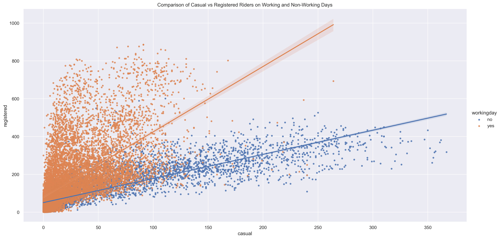
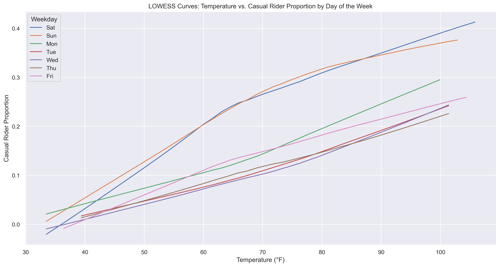
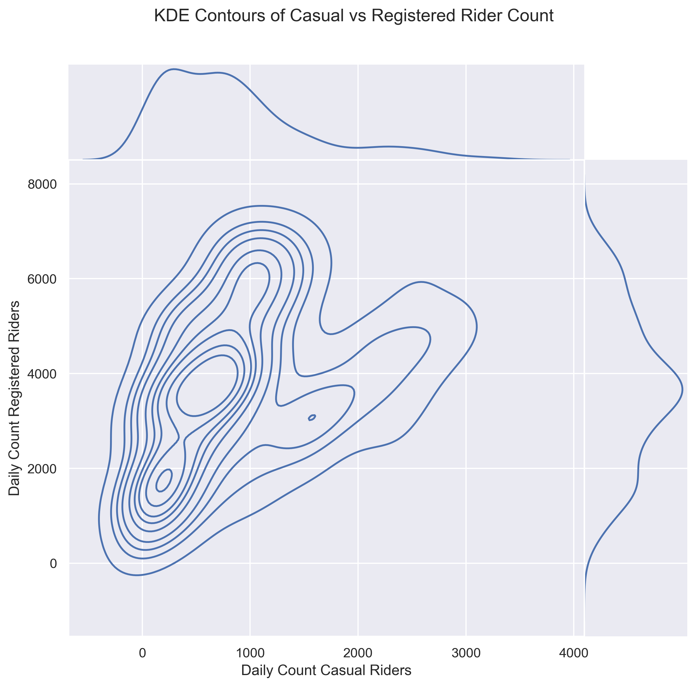
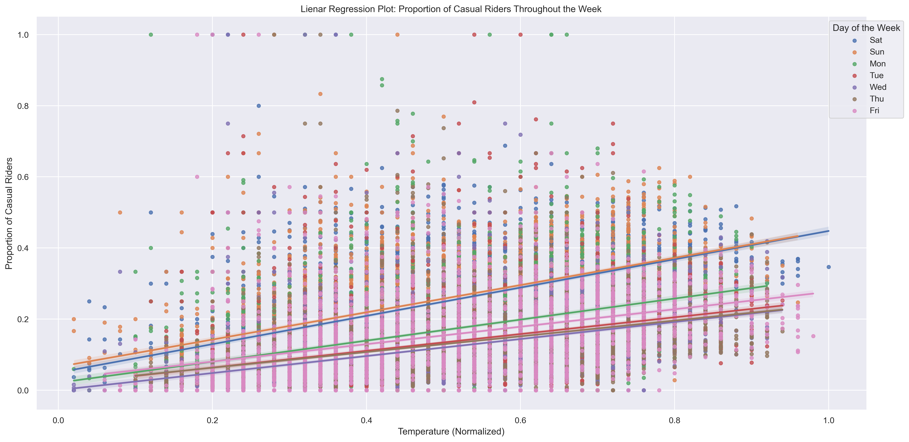
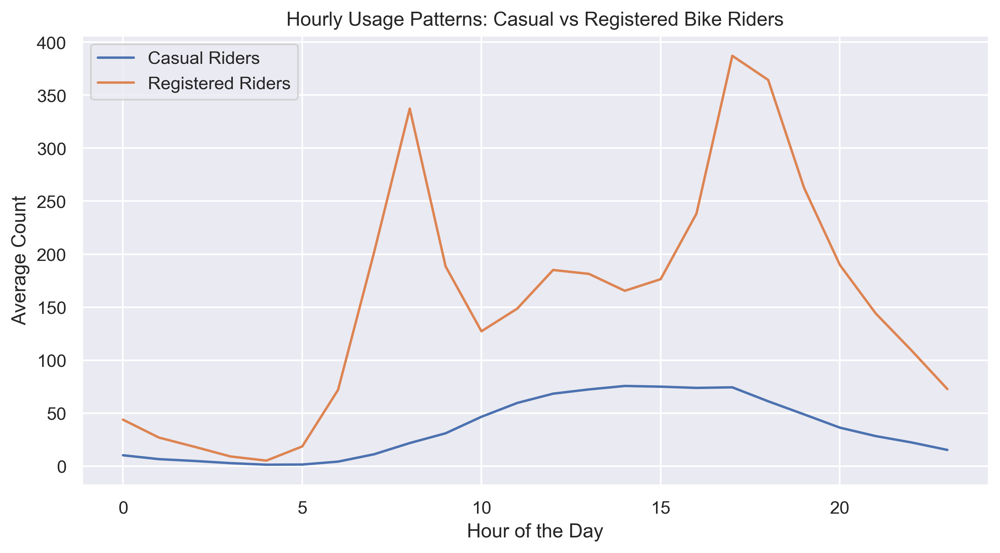

🚲 D.C. Bikeshare Ridership Analysis
Tools Used: Python, pandas, seaborn, matplotlib, statsmodels
🧠 Objective
The goal of this project is to analyze bikeshare ridership patterns by distinguishing between two key user groups: casual riders and registered riders. Using real-world data and exploratory visualizations, the analysis investigates:
- How ridership volume varies across working days vs non-working days
- The correlation between casual and registered usage
- Density distributions to understand rider behavior
📊 Dataset Overview
The dataset includes daily ride counts segmented by user type (casual vs registered), as well as temporal and contextual variables such as:
workingday: Indicator for workdayscasual, registered, count: Ride counts by user typeseason, holiday, and date metadata
Before analysis, the data was cleaned and filtered to enable conditional comparisons and plotting.
📈 Methods and Visualizations
1. Scatterplot of Casual vs Registered Riders
A scatterplot was used to compare casual and registered ride volumes across the full dataset. A positive but non-linear trend suggests that increased casual use often correlates with increased registered use, though at different scales.

2. LOWESS Smoothing
Locally Weighted Scatterplot Smoothing (LOWESS) was applied to reveal underlying trends in noisy data. This helped isolate the general pattern without assuming a specific model. The temperature relationship with casual ridership was most evident on weekends.

3. KDE Density Plot (Working Days Only)
Kernel Density Estimation (KDE) visualized the joint distribution of casual and registered riders on working days. The contours represent areas of higher density, indicating where the counts of casual and registered riders are most concentrated. The marginal distributions on the top and right show the individual density of casual and registered rider counts, respectively.

4. Overlay KDE Comparison (Workday vs Non-Workday)
Stacked KDE plots show how rider dynamics shift. Registered ridership dominates on working days while casual ridership peaks on non-working days.

5. Temperature Effects
Linear regression plots explores how normalized temperature impacts the proportion of casual riders across different days of the week. Warmer temperatures are strongly associated with higher casual ridership, especially on weekends.

6. Hourly Usage Patterns
This line plot compares hourly averages. Registered riders peak during morning and evening commute times. Casual riders are more active midday.

🔍 Key Insights
- Registered riders are more consistent on working days, indicating commuting behavior.
- Casual riders spike on weekends and holidays, suggesting recreational use.
- LOWESS curves capture non-linear relationships between user groups.
- KDE plots offer a more nuanced view than simple scatterplots.
- Temperature is a key driver of casual ridership, especially on weekends.
📁 Conclusion
This bikeshare ridership analysis provides a visual, data-driven lens into how different types of users engage with urban transit systems. These findings could inform:
- Marketing strategies (e.g., targeting casual riders on weekends)
- Infrastructure planning (e.g., ensuring enough bikes during commuter hours)
- Incentive programs to convert casual users to registered memberships